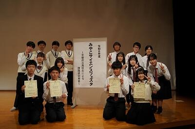
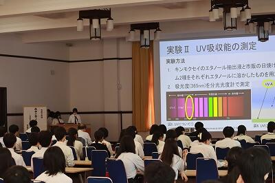
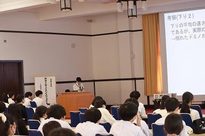
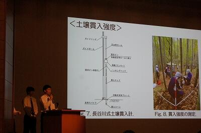
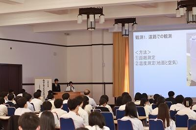
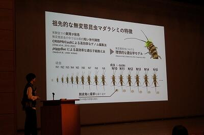

SAGANO BLOG
- >
- SAGANO BLOG
- >
- SSH
2024年06月11日
6月10日 AM「課題研究発表会」
本校では毎年校内での課題研究発表会を行ってきました。今年度は初めて、全校生徒が終日参加し、講演会やワークショップなども組み合わせた、いわば「探究Day」という形でリニューアル開催しました。
午前中は、３年生の課題研究発表会です。体育館での開会式の後、３年生１～６組の生徒はアカデミックラボの研究成果を英語で、３年生７・８組の生徒は、スーパーサイエンスラボⅠ～Ⅲの研究成果をそれぞれプレゼンテーションしました。
アカデミックラボ58件、スーパーサイエンスラボ35件、サイエンス部1件、さらに海外からJunipero Sera High School 2件、Notre Dame Highschool Belmont校1件、合計97件の研究発表が行われる一大イベントとなりました。


当日までに、オンライン上に全ての発表のスライド pdf資料 を閲覧できるようにしました。生徒達は予めこれらを閲覧し、コメントや質疑応答を行いました。英語のスライドは、質問コメントも英語です！
いよいよ当日の発表会。各グループが２～３回ずつ発表を行うため、発表延べ数は268本！ したがって部屋数もHR教室や特別教室併せて35会場と、文字通り全校あげてのイベントとなりました。聴講者は本校全生徒の他、TAとして留学生、教育関係者が来場されました。
アカデミックラボの発表は、質疑応答も全て英語です！質問する側も回答する側も、頭をフル回転させながら真摯に伝えようとする姿が印象的でした。


スーパーサイエンスラボの発表および質疑応答は日本語で行われることもあり、質問する側も回答する側も、科学的・論理的に深いレベルで議論する様子も観られました。各発表の司会は２年生が中心となって取り組みましたが、有志の３年生の他、１年生もチャレンジしてくれました


終了後「これで終わりかと思うと、感慨深いものがあるな･･･」とつぶやいている生徒がいました。今回の経験を自信に変えて、さらに大きな課題解決と夢の実現に向かってくれることと思います。
2024年06月11日
６月９日（日）に京都大学にて「令和６年度みやこサイエンスフェスタ」が実施され、府立高校９校の生徒が課題研究の成果を発表しました。

本校からは３年生４グループが発表しました。タイトルは以下の通りです。
キンモクセイの秘める効能～抗酸化能とUV吸収能の測定～
逃げ水観測時の温度測定に基づく光路と実測との比較
段差がドミノの倒れる速さに与える影響について
熊本県玉名郡和水町の放置竹林の現状把握～土壌情報と林分材積～
どのグループもこの日に向けて、時間をかけて準備してきました。
これまでの探究の過程で多くのことを学んできました。
研究結果だけでなく、その学びすべてが成果です。お疲れさまでした。

この日は１・２年生も参加し、興味のある発表を聴き、質疑応答に参加しました。積極的に手を挙げて質問する１年生に頼もしさを感じました。

また、本校卒業生４名が講評者として参加し、うち１名は大学院での自身の研究について発表してくれました。

高校生のお手本になるような論理的で理解しやすい発表でした。
生徒たちにとって憧れの存在になったのではないかと思います。
協力してくれた卒業生の皆さん、ありがとうございました。
2024年06月08日
嵯峨野高校では、課題研究の成果を校内や府内で発表するのみならず、外部の学会でも発表しています。表題の学会には毎年参加しており、今年も１１名の生徒が４件の発表を行いました。会場は千葉の幕張メッセです。
学会前日は上野の国立科学博物館に赴き、科学的知見を深めました。国立科学博物館は「日本館」と「地球館」からなる、日本屈指の展示・所蔵量を誇る博物館であり、フロア１つでも通常の博物館の特別展を軽く上回る充実度です。生徒は研究発表だけでなく博物館見学も非常に楽しみにしており、充実した時間を過ごしました。例えば、初期の機械的計算機と言える「九元連立方程式求解機」をみた彼らは、そのアイデアにしきりに驚愕・感心していました。
参考：国立科学博物館「九元連立方程式求解機」
https://www.kahaku.go.jp/exhibitions/vm/past_parmanent/rikou/computer/kyugen.html


学会当日、宿泊所から幕張メッセに向かいました。入場手続きゲートを間違えてしまう場面もありましたが、無事会場に到着しました。 生徒は会場の大きさに驚いているようでした。


ポスター会場には JAXA や JAMSTEC、防災科研などの様々な研究機関・学会・大学や防災・計測関連企業の様々なブースがあり、クイズラリーも実施されていました。生徒は様々なブースを訪れて知見を深め、さらにノベルティグッズをたくさん集めていました。
午後、いよいよ「高校生ポスター発表」の部が始まりました。すごい熱気です！


実は、彼らは発表会に向けてかなり時間をかけて準備してきました。校内や他の府立高校生との発表会に比べると、鋭い質問や指摘事項が多かったのですが、深いレベルでの指摘や議論を通して思考が深まり、苦労が報われた充実の二日間でした！
2024年05月09日
４月29日にSSH事業の取組として，地理・地学 丹後巡検を実施しました。
目的は，丹後方面各地を巡検し，サイエンスフィールドワークを通して，地理学および地球科学に関する知見を深め，今後の学習の動機づけや将来の進路選択の参考とすることです。
サイエンス部，校有林調査ラボ，地理・地図ラボに所属する生徒が，それぞれの目的をもって参加しました。
天橋立，丹後海と星の見える丘公園，伊根，屏風岩，琴引浜，郷村断層を巡りながら，各地点と移動途中のバスの車窓からの風景について，教員がレクチャーを行いました。
最後に，個々に学んだことや気づいたこと，疑問に感じてさらに深めたいことをレポートにまとめました。レポートのテーマには次のようなものがありました。
・天橋立における侵食対策の現状と課題
・天橋立の松並木の植生とその保全
・自然の浄化作用や人間が及ぼす自然への影響
・京都丹後の屏風岩の形成について
・河岸段丘の土地利用 他

後日，事後学習として，巡検で学んだことをクラスで発表しました。学んだ知識をアウトプットすると同時に，質疑応答を通して知的な探究心の輪を広げていく様子も見られました。
教科書に閉じない，知識が分野を超えてつながる学びの体験となりました。
2024年04月30日
１年生の総合的な探究の時間「ロジカルサイエンス」では、探究学習の基礎的なスキルを身につけることを目標にしています。

初回ガイダンス
まずは課題設定のために、興味・関心を深堀りし、文献を探します。
クラスメイトと活発に対話しながら思考しています。

ペアワーク

図書館でのグループワーク
１年生たちがどんな探究の「問い」を設定するのか、楽しみです。
2024年04月14日


.jpg)
地理オリンピックの一次選抜・二次選抜が終了し、大会本部から嵯峨野高校にメダルと賞状が届きました。
受賞したのは、今春の卒業生と３年生の２名です。３月末と４月８日の伝達表彰時に、校長先生から銅メダルと賞状がそれぞれ授与されました。
嵯峨野高校生が地理オリンピックでメダルを獲得するのは、４年連続となります。嵯峨野高校で複数のメダリストが誕生したのは今回が初めてです。
受賞した２名からのコメントを紹介します。
「地理オリンピックに限らず、科学オリンピックというのは、自分がその科目が好きという気持ちと普段受けている授業で得た知識や考え方だけでも、十分挑戦できるものだと思うので、後輩のみなさんもぜひ、科学オリンピックにチャレンジしてみてください。」
「学んだことを繋げていき、世界を俯瞰する自分なりの視点を得られることに、地理の醍醐味を感じました。限られた時間の中で自分の好きをとことん追求する時間を持てたことは、非常に有意義だったと思っています。」
地理オリンピックに興味のある人は、地理オリンピックのホームページをご覧ください。過去問も出ています。今年度、多く嵯峨野生が地理オリンピックにチャレンジすることを期待しています。
2024年03月22日
3月19日に行われました第65回日本植物生理学会高校生生物研究発表会にスーパーサイエンスラボ生物ラボから18人が参加しました。全国から70テーマのポスター発表が行われ、熱気あふれる会場の中、大学の研究者、大学生、他校の先生や生徒から鋭い質問が飛び交いました。


発表の際には、聴講いただいた方に合わせて柔軟に対応できたと思います。中には研究した生物が専門の先生が見てくださり、活発な助言（生物愛談義？）も繰り広げられます。


「カイワレ大根にストレスを与えた場合のポリフェノール量の変化」を発表したチームが顧問審査員賞を受賞しました！二人には今学会の感想を書いてもらいました。


学会：第65回日本植物生理学会
参加者：藤井麗子、湯川瑞結
私たちは、第65回日本植物生理学会年会特別企画 高校生生物研究発表会に参加しました。全国各地から34校が参加し、ポスター発表や各学校のSSHの取り組みの紹介などが行われました。今回の研究発表会では、大学生や他校の先生など、たくさんの方にさまざまな観点からの意見を聞くことができ、私たちにとってとても貴重な経験となったと思います。発表後には自分たちのテーマや実験について多くの改善点や新しい実験の活用の仕方を学ぶことができました。自分たちの研究を評価していただけたことがとても嬉しかったです。この経験を通して探究活動の面白さを改めて感じられたと思います。

自らの研究を発表できたことは勿論、他校のレベルの高い研究を見て、様々な意見をもらうことで成長できた１日でした。
2024年03月22日
 スーパーサイエンスラボ、アカデミックラボの生徒各５名ずつが、「第６回 高校生サイエンス研究発表会2024」（主催 第一薬科大学・日本薬科大学・横浜薬科大学）において研究発表を行いました。今回はZOOMによるオンライン発表形式で、3月12日と13日に、それぞれ以下の２件の発表を行いました。
スーパーサイエンスラボ、アカデミックラボの生徒各５名ずつが、「第６回 高校生サイエンス研究発表会2024」（主催 第一薬科大学・日本薬科大学・横浜薬科大学）において研究発表を行いました。今回はZOOMによるオンライン発表形式で、3月12日と13日に、それぞれ以下の２件の発表を行いました。
「段差がドミノの倒れる速度に与える影響について」
「自然由来の化粧品原料を探し求めて～京野菜とキンモクセイの秘める効能～」
生徒は少し緊張しながらも、発表及び質疑応答をしっかりと行いました。
2024年03月21日
令和６年２月18日 京都府高等学校理科教育研究会連絡協議会主催の令和５年度高校生理科研究発表会が、京都市青少年科学センターにて行われました。
７校から16本の研究発表がありました。部活動や課題研究で行った研究などをプレゼンテーションし、活発に交流が行われました。
本校のSSHの取組であるスーパーサイエンスラボの地学(気象)ラボから「 逃げ水発生時の気象観測」のタイトルで発表しました。夏場の道路で見られる逃げ水と、そのときの気温分布を観測し、発生要因やメカニズムを解き明かしたいと思って研究してきました。

緊張もありましたが、自分たちの言葉で伝えることができました。この経験を活かして、今後も研究を続けていきます。
2024年03月18日

3月15日(金)、京都地学教育研究会にてSSL校有林調査ラボが日頃の活動の様子を発表しました。


彼女は校有林の土から最適な陶土を作る研究をしています。最初は不安そうな表情でしたが、先輩が作ってくれた「粘土の固さを測る装置」を説明すると、この笑顔！一定の重さの棒を自然落下させて、凹んだ深さを測ることで粘土の固さを数値化するそうです。手作りですが、きちんとＪＩＳ規格に合わせて作っています。「無ければ...作ればいい！」の精神。


彼は校有林の杉をサンプリングして、下から上まで1メートルごとに輪切りにし、年輪の幅を測定しています。年輪から年代や気候を調査するそうです...だから校内にこの長さの木が多量にあったのね...。


彼女は松ぼっくりの発芽状況を調査しています。種を正確に採取するため、傘をわざと閉じた状態にしてから鱗片を1枚1枚もぎっていくそうです。熱心に説明するその手には絆創膏が...。この松ぼっくりが、あなたをそこまで夢中にさせるのね。


悩んだり、閃いたり...

竹の廃材利用で「竹サックス（かなりよい音色！）」を作ったり...。
今後も校有林調査ラボから目が離せません。
2024年03月15日
前回(2/20)に引き続き、ご紹介します。
この透明な筒はなんですか？


「セル」だそう。この中に液体を入れて、「吸光度」と言うものを測定するらしいです。
難しい機器を使いこなしていました。すごい。

臭いが・・・。何をしているのですか。

食品にカビを生やし、そこから「ペニシリン」を抽出しているとのこと。あの有名な漫画＆ドラマに影響を受け、自分たちにも抽出できるか試してみたいと思い研究を始めたそうです。
その後、抽出したペニシリンで納豆菌を抗菌することができたそう！すごい。リアルJIN！
中央の黒い物がカビの塊でその周りのクリーム色の物が納豆菌です。


何度も試行錯誤したそうで、うまくいった時はとっても嬉しそうでした。
憧れや感動は、人を動かすのですね。
このすごい形の植物はなんですか。


「ハエトリソウ」という食虫植物です。ぎざぎざの葉の中に迷い込んだ虫を挟んで捕食し、栄養を取る植物だそう。そんな珍しい生活スタイルを持った植物に興味をもったそうで、消化時間について調べているそうです。

植物の世話も自分たちで行い、花も咲かせたそうです。
こちらは、何やら、データ処理中。

「苔」が環境汚染の指標にならないか検証しているそうです。京都市内の数地点に生えている苔の種類とその生育環境を調べているそう。苔って皆同じに見えますが、きちんと図鑑を使って種類を特定し、地域ごとの分布を調査していました。地道な努力。尊敬します！
こちらは、コンピュータールーム。ここにも生物ラボの生徒が、学会に参加するそうで、発表ポスターを作り始めたとのこと。データの整理など、相談しながら行っていました。

生物ラボでは、様々な生物を扱い、自分の興味関心をもとに日々研究に取り組んでいます。
2024年02月09日

校長先生の開会あいさつ

メディアの取材も入っており、NHKの番組で放送されました。


令和６年２月８日(木)の午後、令和５年度アカデミックラボ課題研究発表会を開催しました。２年生１～６組の生徒が、１年間かけて探究した58のテーマについて、それぞれ発表しました。
視聴生徒として１・２年生全生徒が参加したほか、それぞれの探究活動でお世話になった方やSSH関係校の視察・メディアの取材などで来校いただいた方にもご参加いただき、活気あふれるポスターセッションが行われました。
発表は一つの区切りではありますが、この後も次年度の英語でのスライドプレゼンテーションに向けて探究活動を続けていきます。
2024年02月01日
授業も残すところわずかとなってきました。
最後まで研究を頑張っています。
実験器具がたくさん。何の実験をしているのでしょう。


植物に含まれる「ポリフェノール」の量を調べているみたい。難しそう。
植物は、貝割れ大根を発芽させて、それを使っているみたいです。大変そうだけど、楽しそうで良いですね。
こちらは、また違った実験の様子。

見慣れないものがたくさん。これは、「クリーンベンチ」といって、無菌状態で作業するための機器。作業が複雑で難しそうですね。「アクネ菌」を「乳酸菌」で抗菌できるか確かめているそう。自分の悩みから研究を始めたそうですよ。
そして、こちらは、それを培養している様子。結果が出るまでに、１，２日はかかるそう。この中に生物が居るなんて・・。
翌日観察に来ていましたよ。

こちらは、何をしているのでしょう。
「魚」のストレスを調べているそうです。魚にもストレスがあると思って調べたいと思う気持ち、素敵ですね。
縞模様が特徴的なゼブラフィッシュとその飼育水槽
生物ラボでは、授業外の活動が多くなるため生物室で作業した際には、こうやって履歴を自分たちでつけています。

皆さん、研究とお世話の両方、頑張っているんですね！

こちらは、少し狭い部屋ですが、皆さんそれぞれ作業していますね。
次回へ続く。
2023年12月13日
今週は卒業生が講義に来てくれる、嬉しい授業が続きます！
第一弾は12月13日（水）1,2時間目、『サイエンスレクチャー2023』！！

丸岡さんは生物間（虫と植物など）相互に作用する化学因子に注目して、
メカニズムを解明する研究をされています。
その研究から生まれたのが...今注目の『虫秘茶』！！
なんと虫（蛾の幼虫）のウンチでできたお茶なのです！！
そして...そのウンチ！

おっかなびっくり実物の香りを嗜む生徒のみなさん。しかし、無意識のうちにウンチの匂い方も手で空気を鼻孔に送る理系作法です。
あまりの芳香に「桜餅の香り！飲んでみたい！」「このまま食べられる！」との声も。
このメカニズムをどのように解明するのか、分析の方法も教わりました。
ここがサイエンスレクチャー！
生徒から研究の今後の展望や社会的な展開などの質問を受け、丁寧にお答えいただきました。その最後に「この研究の意義は何より、自分が一生楽しめる研究を見つけたということです」とお話しされたことがとても印象的でした。講義後「好奇心が既存の常識を上回ったのはいつ頃からですか？」とお尋ねしてみると「僕は馬鹿になれることが、かっこいいことだと思っています。そうなれたのは高校2年生のときです。受験勉強がきっかけで、人の目を気にせず、やりたいことに真っ直ぐ努力できる人になりたいと思いました。」とのことでした。
生徒の皆さんが一生懸命質問しているとき、嵯峨野生の好奇心が育っているのを感じました。この講演を企画した先生の顔はとてもうれしそうでしたよ。

どうか皆さんも好奇心を味方に、無限の可能性で嵯峨野から大きな空へ羽ばたいてください。
2023年12月11日
１２月７日（木）、立命館大学大学院スポーツ健康科学研究科博士課程２回生の廣松千愛さんをお招きし、サッカー部と希望者を対象にサイエンスレクチャーを行いました。これまでの研究で明らかになったことや、これからの研究の展望について御講演いただきました。また、質疑応答の時間では、生徒の素朴な疑問から専門的な視点の質問まで、丁寧にお答えいただき、さらに知見が広がりました。
研究内容はもちろん、廣松さんのキャリア形成や、研究に取り組まれる姿勢など、生徒たちにとってたくさんの学びと気づきを得る時間になりました。


なお、今回のサイエンスレクチャーは、RARA（立命館先進研究アカデミー）が主催する「ライスボールセミナー」との共催でした。「ライスボールセミナー」とは、昼休みに若手研究者の研究発表を聴き意見交換する企画です。これまでは主に立命館大学の附属校・提携校を対象に行われており、それ以外の学校へ出向いての実施は今回が初開催となります。
2023年11月21日
11月11日（土）、「令和５年度 みやびサイエンスガーデン」を京都工芸繊維大学にて開催しました。このイベントは、京都府教育委員会と、SSH指定校である京都府立洛北高等学校・嵯峨野高等学校・桃山高等学校が主催となり、自然科学分野を中心とした探究活動に取り組んでいる生徒たちがポスターでの中間報告を行うものです。今年度はスーパーサイエンスネットワーク（SSN）校のうちの南部６校と園部高等学校の計７校から115件のポスター発表、京都府立西舞鶴高校主催の「海の京都サイエンスガーデン」から25件のポスター展示が行われました。また、両イベントはオンラインのGood Job Cardにて質問やコメントを送る交流を行いました。
本校２年生は、これまでのスーパーサイエンスラボ（SSL）Ⅱでの取組の途中経過を報告しました。
【テーマ例】
「フライパンにおけるマイクロプラスチックの発生量の仕組みと変化」
「クリプトビオシス状態のクマムシが復活するスクロース溶液の濃度検討」
「振動に対する構造物の揺動と地中埋設部の深さの相関」
「占い師の行動における人狼ゲームの勝率の変化」
「陶土の種類によるオカリナの音色比較」
「アカマツ(Pinus densiflora Siebold et Zucc.)の根長と土壌物理性の関係」
「熊本県における放置竹林問題～竹林利用に向けた全バイオマス量の推定～」
準備の段階では初めてのポスター発表を不安に感じている生徒もいましたが、当日には、特に質問されたところを丁寧に説明するなど、それぞれ工夫しながら発表を終えることができました。他校の生徒の発表に質問をしたり、研究について議論したりすることで新たな交流の輪を広げた生徒もいました。
今後、頂いた質問やコメントを元に実験を重ね、自身の研究についてより深く、より多角的な視点で語れるようになってほしいです。


また、今年度は発表者だけでなく、１年生も見学に参加し、嵯峨野高校や他校の先輩の発表を聞き、質問やコメントを行いました。参加した１年生は
「説明をしている人が生き生きとしていて楽しみに思った」
「自分の興味のある分野が以前よりはっきり見えてきた」
「まずは日常でテーマを見つけることをがんばろうと思います」
など、今後の探究活動に向けて期待を膨らませていました。
2023年11月20日
10月16日（月）、2年生専修コースの生徒がサイエンス英語の授業で、立命館大学のノックソン先生から考古学の講義を受講しました！以下、その時の様子を英語でお伝えします。
The other day we had a special guest lecturer from Ritsumeikan University visit our Science English classes. Dr. Corey Noxon, an Assistant Professor, came and gave the students a lecture and a workshop on creating AR and VR models. Dr. Noxon uses AR and VR when researching Jomon Period archaeology. He explained how AR and VR helps researchers to study Japan's past, even when they live in countries all over the world. Then he showed the students how to use some of the AR tools and they created their own sample models. It was a lot of fun, and everyone had a new appreciation for how technology can help us to learn more about history!


2023年10月17日
１年生京都こすもす科専修コースでは、SSL（スーパーサイエンスラボ）Ⅰが始まりました。
先週のガイダンスを終え、今週から理科（物理・地学・化学・生物）・数学の各教科の実験を行います。
初回は、物理と地学です。
【物理】
本日のテーマは「綱引きにおいて、どのような姿勢を取るのが効果的か？」
今回は、角材を用いてモデル化した実験装置を組み立て、データロガーで張力の測定を行いました。iPadを用いてデータ計測や分析を行い、グループで結果について議論するなど、より深い実験になりました。
【地学】
本日のテーマは「木の高さを測ろう」
木の高さをどうやって測るか、初めて触れる器具を用いながら、試行錯誤を繰り返しているうちに、数学で既習の三角比や、中には相似を使って求めるなど、それぞれの班で工夫が光る実験でした。
2023年09月18日
9月16日（土）～18日（月）、熊本県玉名郡にて、ジャパンフィールドリサーチ（JFR）in 熊本を実施しました。
この取組は、各種学術学会での発表を目標にした、参加生徒の発案による森林環境調査です。
本校教諭の親族にご協力いただき、玉名郡和水町にある「ゆるっと！ひふみ亭」を拠点として、サイエンス部と校有林調査ラボの２年生12名が研究活動に参加しました。
また、熊本県立第二高校と熊本県立鹿本高校の生徒・教職員の皆さんと合同実施となりました。
初日は開会式の後にまず、前和水町教育長 岡本貞三 先生から、和水町の自然と歴史についての御講義をいただきました。
そして、熊本県の高校生と共に、ひふみ亭近隣の山林にて調査・研究活動を実施しました。
森林調査の際には、九州大学大学院農学研究院教授 平舘俊太郎 先生と、東海大学農学部教授 井上弦 先生からも指導・助言をいただきながらの活動となりました。
地面に穴を掘って土壌の観察をしたり、土の硬さ等を調べたりしました。
また竹林では、竹の太さや高さ、本数などを調べました。
調査地の測量をして、地形の調査も行いました。
当初は悪天候も想定されており、どのような活動ができるか不安もありましたが、幸いにも、ときどき小雨が降った程度で３日間の活動を無事に終えることができました！
本校の生徒たちも、現地で採取した竹や土のサンプルを持ち帰って、さらに探究活動を進め、１１月に実施予定のみやびサイエンスガーデンにおいて「熊本県和水町の放置竹林における土壌断面と土壌物理性」「熊本県における放置竹林問題～竹材利用に向けた全バイオマス量の測定～」「陶土の種類によるオカリナの音色比較」という研究主題で中間発表を行う予定にしています。
最後になりましたが、この活動の拠点としてお世話になったひふみ亭の方々には、参加生徒の調査研究活動に際して安心・安全の確保の観点からも全面的にご協力いただき、本当にお世話になりました。
特に、用意していただいたお昼ご飯は絶品でした！
お世話になった皆様、本当にありがとうございました。

2023年09月15日


{kind=link}
{kind=link}
{kind=link}
{kind=link}
{kind=link}
{kind=link}
{kind=link}
{kind=link}
{kind=link}
{kind=link}
{kind=link}
{kind=link}
{kind=link}
{kind=link}
{kind=link}
{kind=link}
{kind=link}
{kind=link}
{kind=link}
{kind=link}
{kind=link}
{kind=link}
{kind=link}
{kind=link}
{kind=link}
{kind=link}
{kind=link}
{kind=link}
{kind=link}
{kind=link}
{kind=link}
{kind=link}
{kind=link}
{kind=link}
{kind=link}
{kind=link}
{kind=link}
嵯峨野高校には相互交流で親交を深めている高校が国外にいくつかあります。シンガポールにも何校かあります。コロナ禍が落ち着きはじめ、久しぶりにシンガポールからの訪問客を受け入れることができようになりました。そして、爽やかな初夏にシンガポールにあるChung Cheng High School の副校長先生が嵯峨野高校を訪問してくださいました！それぞれの学校の取組やグローバル社会での共通課題などについて本校教員と交流した後、本校の授業見学もされました。グローバルインタラクションの授業では、シンガポールの教育について英語で講義をしてくださいました。スーパーサイエンスラボにおける生徒の取組にも大きな関心を寄せてくださり、将来的に協働でサイエンスプロジェクトを計画するお話もすることができました。楽しみです！
〒616-8226
京都市右京区常盤段ノ上町15番地
TEL 075-871-0723 FAX 075-871-0724
E-mail [email protected]
Copyright (C) 京都府立嵯峨野高等学校 All Rights Reserved.